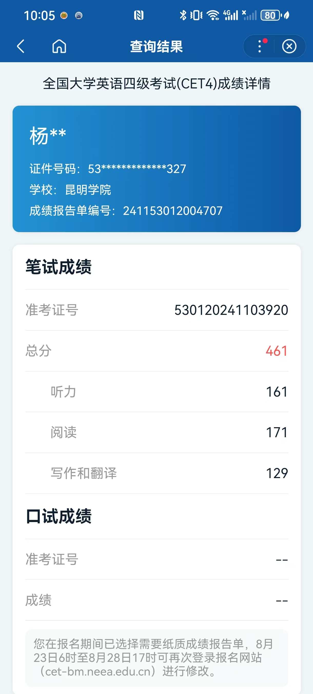

考试时间：2023年12月16日
英语老师：李老师（一直鼓励我别放弃听力）
说实话，我高中英语底子一般，刚上大学时连四级真题都不敢看。从2023年9月开始，我给自己定了个死规矩：每天至少背30个单词、做一篇仔细阅读。最痛苦的是听力——第一次模考只对了9道题。后来我逼着自己每天听30分钟VOA慢速，反复精听真题，两个月后终于能听懂大部分对话。考前两周，我集中刷了近三年的真题，把错题本翻了不下五遍。
12月的昆明很冷，我提前一小时到了考场。发下试卷的那一刻手有点抖，但深呼吸后告诉自己：准备了这么久，怕什么？写作和翻译刚好押中了“传统文化”主题，写得还算流畅。听力还是有点紧张，不过靠着考前练出的“预读选项”技巧，勉强跟上了节奏。阅读部分时间刚好够用，最怕的长篇匹配竟然全对。交卷那一刻，心里一块石头落了地。
查分那天凌晨，我躲在被窝里刷新页面——498分（听力158，阅读185，写作翻译155）。虽然不算高分，但对于一个英语困难户来说，已经是对自己最好的交代。这次考试让我明白：英语从来不是天赋问题，而是时间和方法的问题。那些早起背单词的清晨、听听力听到耳朵疼的夜晚，都化成了成绩单上一个踏实的数字。更重要的是，我学会了如何拆解目标、持续执行，这种能力比四级证书本身更珍贵。